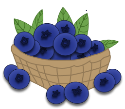
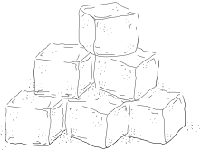
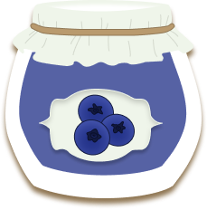

Blueberry Freezer Jam

+

=

Use fresh or frozen berries to make this quick freezer jam. Crush berries and sugar together in a heavy saucepan. Place over a medium burner and bring to a boil. Cook for 20 to 30 minutes until thickened, stirring frequently. Spoon into a jar and cover with a lid. Store in the refrigerator for 3 weeks or freezer for 12 months.